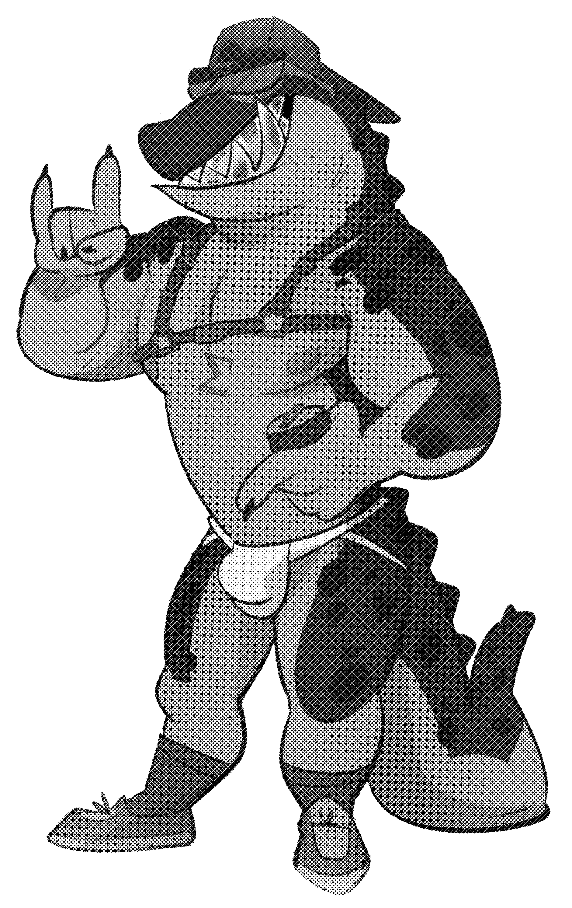
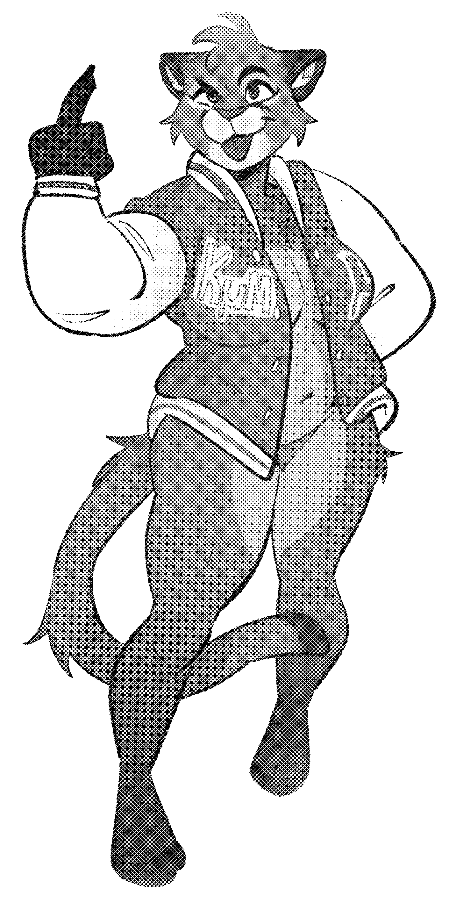

Register to attend Vice via Humanitix.
Standard tickets (Pledge level) are $20.
Sponsor tickets (Legacy level) are $50 and include priority queue and cloaking, plus additional swag!
It's an American-style college party and each house (like a fraternity or sorority, but gender neutral) wants YOU to join them. It's not overly important which house you choose - whether it's Kappa Epsilon Gamma (KΣG) in red or Kappa Mu Mu (KμM) in blue - but we'd love to see you dress up on the night in your house's colours!
Apart from wearing your house's colours, we encourage wearing sturdy, closed shoes. Otherwise, be your best sexy self! The only restriction is that genitalia must remain covered, but sometimes it’s best to leave a little to the imagination!
Yes, and yes!
We will have a dedicated space for bag storage on site, however any items left unattended is done so at your own risk.
For the safety of all attendees, this is a strictly ticketed event and there will be no way to register at the door.
We highly encourage attendees to stay in the moment as much as possible. If you do wish to get a picture, please ensure that other attendees are not inadvertently being captured in the background.
Yes! Vice will be operating with a strict guest list and you should be prepared to show a government issued photo ID at entry.
Take the 86 tram (towards Bundoora RMIT) from the CBD (Bourke Street Mall/Parliament station) to stop 15: Smith St/Gertrude St
Parking is limited and most of the nearby laneways have residential permit restrictions.
Join our Telegram Updates Channel, our Telegram chat group, follow us on Bluesky or X (Twitter), or even send us an email to events.vice@gmail.com!